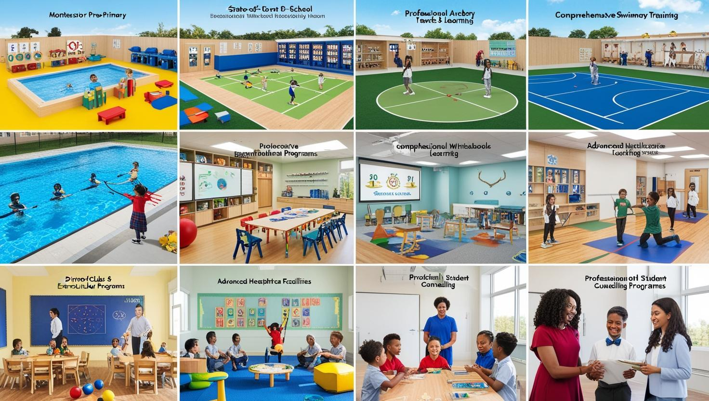
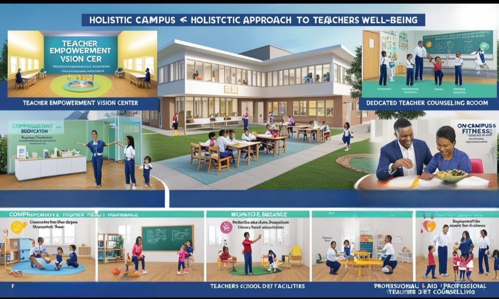

Vision 2050: Transforming Education
Student-Centric Vision
- Montessori Pre-Primary Section
- State-of-the-Art Swimming Pool
- Professional Archery Training Facility
- Comprehensive Basketball Ground
- Well-Developed, Modern Classrooms
- Dedicated Religious Texts Learning Class
- Advanced Healthcare Facilities
- Full-Time Nursing Staff
- Daily Structured Games and Physical Activity Hour
- Team of Experienced Teachers
- Welcoming Environment for Fresh Talents
- Diverse Clubs and Extracurricular Programs
- Comprehensive Scholarship Opportunities
- Professional Student Counseling Room

Teacher Empowerment Vision
- Dedicated Teacher Counseling Room
- Comprehensive Health Insurance for Teachers and Families
- Continuous Professional Training Programs
- Financial Support for Higher Education
- Encouragement and Resources for Research Work
- Emphasis on Work-Life Balance
- On-Campus Fitness Coach
- Professional Diet Counseling
- Childcare Facilities for Teachers' Toddlers
